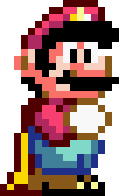
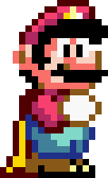

Como jogar?
Aperte uma das teclas W, ⇧ ou Espaço para fazer com que o Mario pule sobre as Koopas que vierem, mas CUIDADO! Pois se ele bater em uma Koopa, ele morre e é GAME OVER!
Para fazer com que o jogo reinicie, aperte novamente qualquer tecla
 


Faça o Mario pular os Koopas para não morrer!
Aperte uma das teclas W, ⇧ ou Espaço para fazer com que o Mario pule sobre as Koopas que vierem, mas CUIDADO! Pois se ele bater em uma Koopa, ele morre e é GAME OVER!
Para fazer com que o jogo reinicie, aperte novamente qualquer tecla